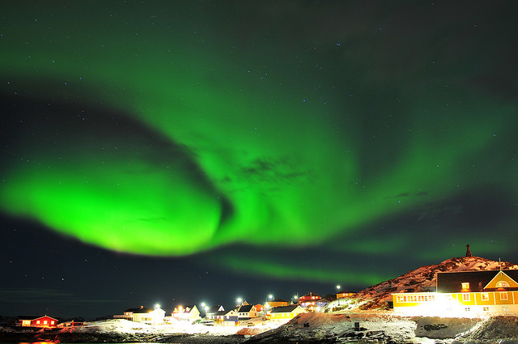
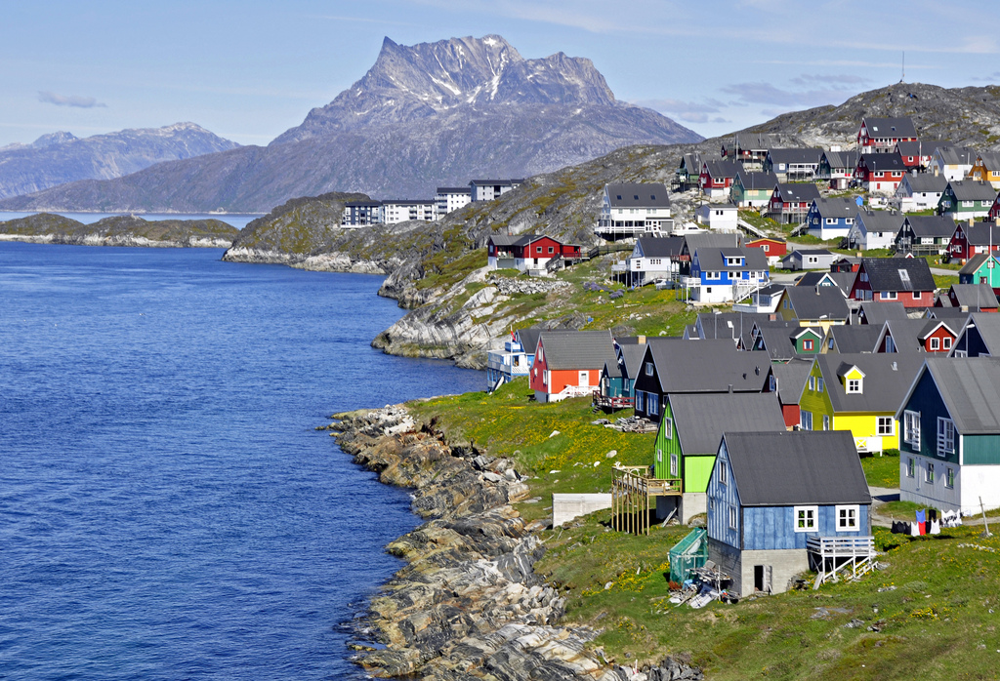

Nuuk is the capitol of Greenland. During the second world war, a military base was established in Nuuk, along with an airport, hospitals, and schools. After the war ended, the military left, but the Inuit people stayed in Nuuk. There are now about twenty thousand people living there, in bright colored houses.
Nuuk is fairly temperate, considering how far north it lies. This is due to the ocean, which in most places would have cooling effect. But far in the north is has the effect of warming the much colder land areas.
The Inuit people are welcoming to visitors, and have a lot to offer for vacationers who want to see marine life.
TourismVisit Greeland

Seamus MacChaluim
Gerald Zinnecker
